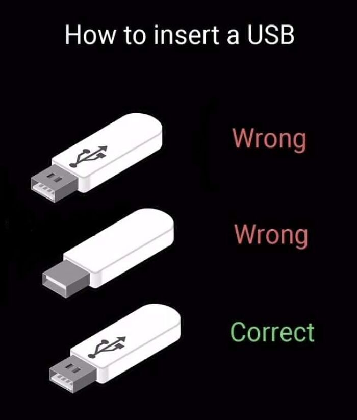
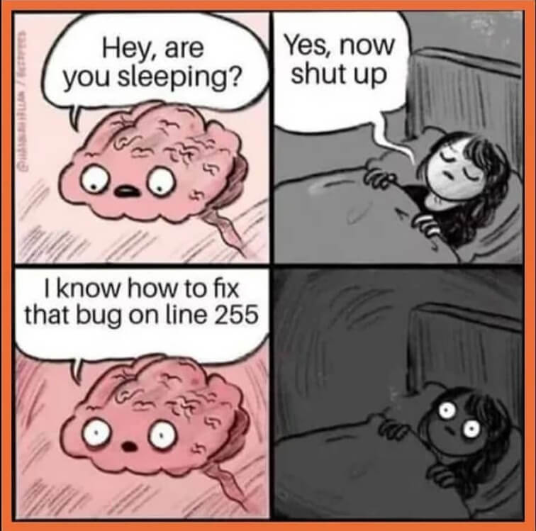
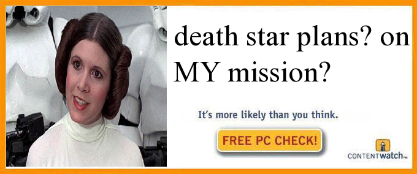

This is definitely not an extensive list of everything, just what I remember off the top of my head.
Believe it or not I'm still not satisfied with all the tech I have. Here's some things I want!
Yes because it's not enough that I have so much tech, I have to tinker with it too.
This is cumulative across all the times I've ever modded something, including if the device wasn't mine
As a reward for making it down here, have some computer memes I consider funny!



I dedicate this to my great computer science teacher, can't believe we're already a quarter of the way through the school year.
Thank you so much for reading my ramblings, and in case I don't see you again, good morning, good evening and good night!
Credits, © 2026 Yellowpandasomething.